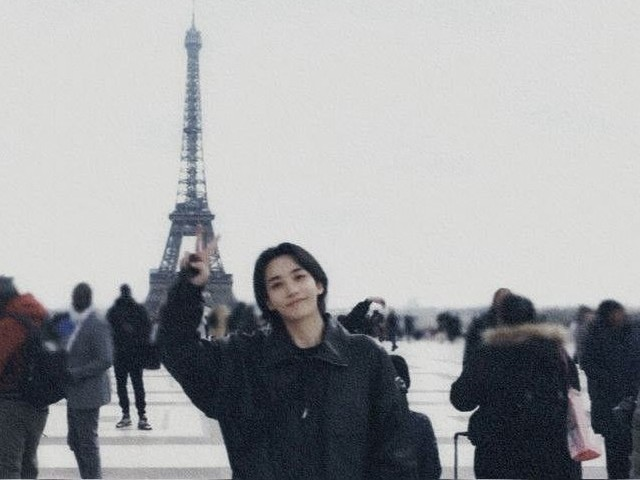
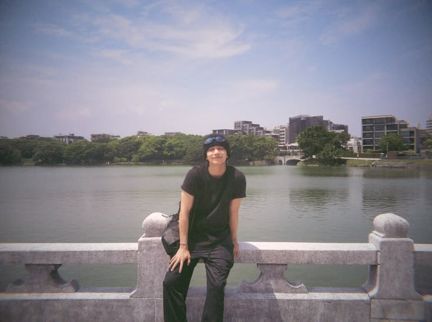
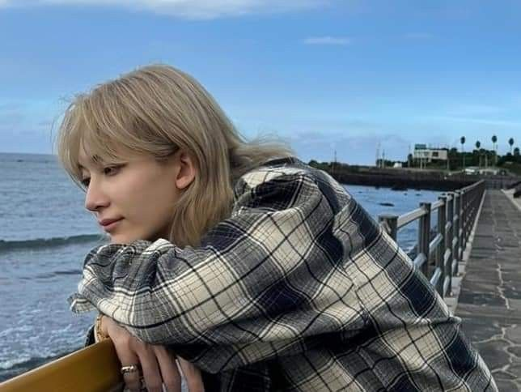

♡ Happy Birthday ♡



Halo umur baru!
Selamat ulang tahun ya?
Aku berdoa biar kamu panjang umur, sehat selalu, dan bahagia terus!
Aku berdoa juga biar apapun yang kamu mau, dikabulkan sama Tuhan ya!
Dan aku juga berdoa agar aku bisa lihat kamu di konser nanti (i miss you so much)
Setahun aku selalu berdekatan dengan kabar kamu ternyata bikin aku sesayang ini
Setahun juga aku ga pernah kehilanagan kabar tentang kamu di militer sana
Tapi ternyata, akhir - akhir ini aku yang paling ketinggalan berita tentang kamu
Padahal kamu udah muncul di media, tapi aku tetep ketinggalan updatean kamu... hehe
Ternyata waktu bisa merubah secepat itu ya, kak?
Kalo suatu saat aku bisa ngobrol sama kamu, aku mau say thankyou ke kamu;
Thank you karena kamu udah choose lahir ke dunia (aku jadi bisa ketemu kamu hihi)
Thank you karena kamu ga nyerah saat trainee
Thank you karena kamu udah jadi idol yang keren
Thank you karena kamu bisa ngehibur aku lewat semua sifat kamu
Thank you karena kamu bisa jadi sosok kakak dan abang walaupun dari layar kaca
Thank you karena kamu udah keren banget sampe saat ini
Thank you karena kamu udah temani aku semasa aku stress saat itu
Thank you karena kamu 'Yoon Jeonghan'
Aku beneran berterima kasih banget sama semesta karena udah kenalin kamu di titik terberat aku
Walaupun aku udah kenal kamu dari lama, tapi setahun yang lalu itu aku beneran merasa closure banget ke kamu
Dan sekarang aku udah sibuk lagii kakk
Aku senang ketika aku udah sibuk kamu udah pulang dari militer, jadi aku bisa recharge energiku pas liat kamu
Sekarang aku lagi suka kangen banget sama sebong huhu
Gatau udah berapa kali aku rewatch nana tour - gose - nana tour - gose
Kalo kamu tanya kenapa aku ga rewatch nana bnb, itu sesimpel karena kamu gada disitu hahaha dan juga itu mukbang terus jirr aku jadi ikut laperrr
Aku harap aku bisa melalui fase kuliah ini dengan baik agar aku bisa nonton kamu di 2 tahun yang akan datang
Beneran deh, aku mau banget nonton kamuuu!!! Tolong doain aku biar aku cepet kaya biar bisa nonton kamu dan samperin kamu ke koreaa! aamiin
Saat aku bikin ini, ada rumor yang bilang kalo kamu mau ke indo bareng Treasure
Jujur ga berharap banyak sama pledut dan waiji, tapi kalo beneran dateng aku berdoa biar tiketnya ga up 500rb
Tapi kayanya ga mungkin karena dollar aja udah 18k saat ini wkwkwk (ngetik sambil nangis)
Kalo kamu jadi WNI aku yakin kamu ambil fispol dan turun ke jalan terus sambil maki - maki pemerintah di X
Aku ngebayanginnya lucu banget lagii wkwkkwk
Sekali lagi, selamat ulang tahun ya kak!
Aku ikut sertakan semua permohonan kamu supaya semesta bantu kabulkan
Aku ga tau mau omong apa-apa lagi,
Intinya semoga kamu bahagia di umur baru kamu ini dann semoga aku bisa cepat ketemu kamu! aamiin
Seperti dilirik lagu Taylor 'i watched begin again' that's how i feel about you
Entah sejak kapan aku merasa begitu.. tapi yang pasti
Aku sayang banget sama kamu, aku harap dunia kasih kamu bahagia terus ya!
When my hand can't hug you, my prayers will be
Love you as always 💗
- wawa sayangg kak hann selaluu -